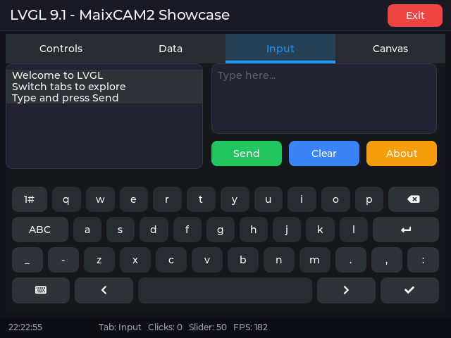

English
EnglishLVGL GUI
Update history
| Date | Version | Author | Update content |
|---|---|---|---|
| 2026-11-24 | v0.1.1 | Ariel Yu | Expand Python LVGL installation, quick-start examples, CJK font guidance, and desktop SDL debugging |
| 2026-11-10 | v0.1.0 | Tao | Add LVGL GUI code and documentation support |
What is maix_lvgl
maix_lvgl provides Python bindings for LVGL 9.1 on MaixPy.
The API matches MicroPython's lvgl module, so existing examples work with
import maix_lvgl as lv.
It renders LVGL into a MaixPy display.Display and feeds
touchscreen.TouchScreen events into an LVGL pointer input device, so no
extra display driver code is needed on MaixCAM / MaixCAM2.

Highlights:
- Full LVGL 9.1 widget set: buttons, labels, sliders, switches, dropdowns,
charts, canvas, keyboard, and more - Styling: colors, radius, borders, shadows, gradients, fonts
- Layout: absolute positioning, alignment, Flex, Grid
- Events, timers, animations
- Per-pixel Canvas drawing and live Chart curves
- Runtime FreeType fonts, including Chinese text
- Plain Python main loop that composes with MaixPy camera, AI and networking
Repository: https://github.com/Taoxuan-168/Maix_LVGL
Install
maix_lvgl is a standalone Python package. Install maix-lvgl from PyPI and
import it as maix_lvgl. The platform status below comes from the
v0.1.1 release notes.
| Platform | Architecture | Python version | Status |
|---|---|---|---|
| MaixCAM2 | aarch64 | 3.13 | Verified on hardware |
| MaixCAM / MaixCAM-Pro | RISC-V 64 | 3.11 | Wheel provided, not verified on hardware |
| Desktop Linux (SDL window) | x86_64 | 3.13 | Verified on WSL |
| Windows (SDL window) | x86_64 | 3.13 | Cross-compiled, not runtime-tested |
Online installation
python3 -m pip install maix-lvgl==0.1.1
Offline installation
Download the matching wheel from the v0.1.1 release. For a board,
use the MaixVision file manager to upload the wheel to /root. For example,
run this in the MaixCAM2 terminal:
python3 -m pip install /root/maix_lvgl-0.1.1-cp313-cp313-manylinux2014_aarch64.whl
For MaixCAM / MaixCAM-Pro, select the cp311-cp311-musllinux_1_2_riscv64 wheel.
Desktop x86_64 uses Python 3.13. Select the manylinux wheel on Linux or the
win_amd64 wheel on Windows.
Verify the installed version in a terminal:
python3 -c "import maix_lvgl as lv; print(lv.__version__)"
Before running on a board, close the app using the display or enter developer
mode through MaixVision.
Quick start
Create a main.py and run the following code in MaixVision:
import time
from maix import app, display, touchscreen
import maix_lvgl as lv
disp = display.Display()
ts = touchscreen.TouchScreen()
try:
lv.init(disp, ts) # hand MaixPy's display and touchscreen to LVGL
scr = lv.screen_active() # the currently active screen
btn = lv.button(scr) # create a button on the screen
btn.set_size(240, 120) # a bigger button is easier to tap
btn.center()
label = lv.label(btn) # put a label on the button
label.set_text("Click me") # the default font has no CJK glyphs, see "CJK text" below
label.center()
count = [0]
def on_clicked(event):
count[0] += 1
label.set_text("Clicked %d" % count[0])
print("clicked", count[0])
btn.add_event_cb(on_clicked, lv.EVENT.CLICKED, None) # register the click event
while not app.need_exit():
lv.timer_handler() # run LVGL timers and refresh the UI, required
time.sleep(0.005) # yield the CPU
finally:
lv.deinit() # release LVGL
ts.close()
disp.close()
After running, a button with a label appears in the middle of the screen. Tap it and the label shows the click count, while the terminal prints clicked 1, clicked 2, ...
lv.init(disp, ts)creates the LVGL display and pointer input device.
PassFalseaststo run without touch.lv.timer_handler()advances the LVGL tick and processes timers, input and
redraws. It replaceslv_tick_inc(); do not call the raw
lvgl.timer_handler()directly.lv.deinit()releases LVGL and the drivers it created.time.sleep(0.005)yields the CPU; redraws are driven bytimer_handler().
Debug the UI on a PC (optional)
On desktop Linux / Windows the same package uses LVGL's SDL window instead of MaixPy's display, so you can tune the UI on your PC before running it on the device:
import time
import maix_lvgl as lv
lv.init(800, 600) # SDL window size
scr = lv.screen_active()
label = lv.label(scr)
label.set_text("Hello LVGL")
label.center()
try:
while True:
lv.timer_handler()
time.sleep(0.01)
except KeyboardInterrupt:
pass
finally:
lv.deinit()
maix_lvgl detects the environment automatically: if maix can be imported (on the device) it uses MaixPy's display and touchscreen, otherwise it creates an SDL window with mouse and keyboard input.
On Linux, use the manylinux wheel from PyPI. The GitHub Release
linux_x86_64 wheel requires the system SDL2 library.
Core concepts
| Concept | Meaning |
|---|---|
| display | LVGL display device, created by lv.init() from the MaixPy display |
| screen | Root object, obtained with lv.screen_active() |
| widget / obj | A control such as lv.button or lv.label; first argument is its parent |
| style | Style properties set with set_style_*; second argument is a state selector |
| event | Callbacks registered with add_event_cb() |
| timer | LVGL timer created with lv.timer_create() |
| anim | Animation created with lv.anim_t() and started with start() |
LVGL uses a parent/child object tree: deleting a parent deletes its children.
Python variables are wrappers around native LVGL objects. Short-lived wrapper
variables do not stop a widget from being shown, but callbacks, animations,
timers and Canvas buffers must be kept alive from Python.
Creating widgets
Every widget takes its parent as the first argument:
scr = lv.screen_active()
label = lv.label(scr)
button = lv.button(scr)
slider = lv.slider(scr)
switch = lv.switch(scr)
chart = lv.chart(scr)
canvas = lv.canvas(scr)
Common widgets:
| Widget | Purpose |
|---|---|
lv.label |
Text |
lv.button |
Button |
lv.switch / lv.checkbox |
Switch / checkbox |
lv.slider / lv.bar / lv.arc |
Slider / progress bar / arc |
lv.dropdown / lv.roller |
Dropdown / roller |
lv.textarea / lv.keyboard |
Text input / on-screen keyboard |
lv.chart |
Line, bar and scatter charts |
lv.table / lv.calendar |
Table / calendar |
lv.canvas |
Per-pixel drawing |
lv.list / lv.msgbox |
List / message box |
lv.spinner / lv.led |
Spinner / LED indicator |
Common widget operations
label = lv.label(scr)
label.set_text("Temperature: 25.3 °C")
label.set_pos(20, 20)
label.set_style_text_color(lv.color_hex(0xE5E7EB), 0)
label.set_style_text_font(lv.font_montserrat_16, 0)
slider = lv.slider(scr)
slider.set_pos(20, 60)
slider.set_size(220, 16)
slider.set_range(0, 100)
slider.set_value(50, lv.ANIM_ENABLE.OFF)
bar = lv.bar(scr)
bar.set_pos(20, 100)
bar.set_size(220, 12)
bar.set_range(0, 100)
bar.set_value(65, lv.ANIM_ENABLE.OFF)
switch = lv.switch(scr)
switch.set_pos(20, 130)
switch.add_state(lv.STATE.CHECKED)

Pass lv.ANIM_ENABLE.OFF as the second set_value() argument to apply the
value immediately; lv.ANIM_ENABLE.ON animates the transition.
Styles
Styles are applied directly to an object with set_style_* methods. The
second argument is the selector:
0: main part (LV_PART_MAIN) in its default statelv.STATE.PRESSED: pressed statelv.STATE.CHECKED: checked state
Color and opacity
color = lv.color_hex(0x3B82F6) # RGB
scr.set_style_bg_color(color, 0)
scr.set_style_bg_opa(lv.OPA.COVER, 0) # fully opaque
panel.set_style_bg_opa(lv.OPA._70, 0) # 70% opacity
lv.OPA provides TRANSP, _10 through _90, and COVER.
Radius, border and shadow
card = lv.obj(scr)
card.set_size(220, 120)
card.set_style_bg_color(lv.color_hex(0x1E293B), 0)
card.set_style_bg_opa(lv.OPA.COVER, 0)
card.set_style_radius(14, 0)
card.set_style_border_width(1, 0)
card.set_style_border_color(lv.color_hex(0x334155), 0)
card.set_style_shadow_width(18, 0)
card.set_style_shadow_color(lv.color_hex(0x3B82F6), 0)
card.set_style_shadow_opa(lv.OPA._50, 0)
card.set_style_pad_all(12, 0)
Gradient background
card.set_style_bg_color(lv.color_hex(0x0F172A), 0)
card.set_style_bg_grad_color(lv.color_hex(0x1E3A8A), 0)
card.set_style_bg_grad_dir(lv.GRAD_DIR.VER, 0)
Text style
label.set_style_text_color(lv.color_hex(0xF8FAFC), 0)
label.set_style_text_font(lv.font_montserrat_20, 0)
label.set_style_text_letter_space(2, 0)
The built-in Montserrat fonts only cover Latin characters. Use FreeType for
Chinese text (see below).
State-specific styles
The same object can have different styles per state:
btn.set_style_bg_color(lv.color_hex(0x2563EB), 0)
btn.set_style_bg_color(lv.color_hex(0x1D4ED8), lv.STATE.PRESSED)
Layout and alignment
Absolute positioning
obj.set_pos(x, y)
obj.set_x(x)
obj.set_y(y)
obj.set_size(width, height)
Alignment
obj.align(lv.ALIGN.CENTER, 0, 0)
obj.align(lv.ALIGN.TOP_RIGHT, -10, 10)
obj.center()
lv.ALIGN includes TOP_LEFT, TOP_MID, CENTER, BOTTOM_RIGHT and more.
The last two arguments are offsets from the aligned position.
Flex layout
Flex arranges children in a row or column:
row = lv.obj(scr)
row.set_size(400, 80)
row.set_flex_flow(lv.FLEX_FLOW.ROW)
row.set_flex_align(
lv.FLEX_ALIGN.SPACE_EVENLY,
lv.FLEX_ALIGN.CENTER,
lv.FLEX_ALIGN.CENTER,
)
for text in ("A", "B", "C"):
btn = lv.button(row)
btn.set_size(80, 48)
lv.label(btn).set_text(text)
Grid layout
Grid suits table-like layouts. set_grid_dsc_array() takes column and row
sizes; the arrays must end with LV_GRID_TEMPLATE_LAST (not exported by the
binding; its value in LVGL 9.1 is 0x1FFFFFFF):
GRID_LAST = 0x1FFFFFFF # LV_GRID_TEMPLATE_LAST
grid = lv.obj(scr)
grid.set_size(300, 200)
grid.set_grid_dsc_array(
[lv.grid_fr(1), lv.grid_fr(1), GRID_LAST],
[lv.grid_fr(1), lv.grid_fr(1), GRID_LAST],
)
item = lv.obj(grid)
item.set_grid_cell(lv.GRID_ALIGN.STRETCH, 0, 1, lv.GRID_ALIGN.STRETCH, 0, 1)
Events
Event callbacks receive an event_t:
def on_clicked(event):
target = event.get_target_obj()
print("clicked", target)
btn.add_event_cb(on_clicked, lv.EVENT.CLICKED, None)
Common events:
| Event | When it fires |
|---|---|
lv.EVENT.CLICKED |
Click |
lv.EVENT.PRESSED / RELEASED |
Press / release |
lv.EVENT.VALUE_CHANGED |
Value changed (slider, switch, dropdown) |
lv.EVENT.READY |
Action completed (keyboard, message box) |
Slider and switch:
def on_value_changed(event):
print("value:", slider.get_value())
slider.add_event_cb(on_value_changed, lv.EVENT.VALUE_CHANGED, None)
def on_switch_changed(event):
print("switch:", switch.has_state(lv.STATE.CHECKED))
switch.add_event_cb(on_switch_changed, lv.EVENT.VALUE_CHANGED, None)
Keep callback functions alive (module level, closure, or a list). Do not use
a temporary lambda that is immediately discarded. The third argument to
add_event_cbis user data; retrieve it withevent.get_user_data().
Remove a callback:
btn.remove_event_cb(on_clicked)
Timers and animations
Timers
def on_tick(timer):
label.set_text(time.strftime("%H:%M:%S"))
timer = lv.timer_create(on_tick, 1000, None) # every 1000 ms
lv.timer_create(callback, period_ms, user_data) starts the timer
automatically. Keep both the callback and the timer object referenced; call
timer.delete() when it is no longer needed.
Animations
box = lv.obj(scr)
box.set_size(80, 80)
box.set_style_bg_color(lv.color_hex(0xF59E0B), 0)
box.set_style_bg_opa(lv.OPA.COVER, 0)
box.set_style_radius(16, 0)
def exec_anim(anim, value):
box.set_x(value)
anim = lv.anim_t()
anim.init()
anim.set_values(0, 240)
anim.set_time(1200)
anim.set_playback_time(1200)
anim.set_repeat_count(0xFFFF) # loop forever
anim.set_custom_exec_cb(exec_anim)
anim.start()
set_values(start, end) sets the range, set_time() the forward duration and
set_playback_time() the reverse duration. Keep the anim object alive.
maix_lvgl also provides lv.anim_set_exec_cb(anim, cb) as a convenience
wrapper.
Drawing
Canvas: per-pixel drawing
lv.canvas gives direct access to pixels, useful for waveforms, gauges and
custom graphics:
import math
WIDTH, HEIGHT = 320, 180
buffer = bytearray(WIDTH * HEIGHT * 4) # ARGB8888
canvas = lv.canvas(scr)
canvas.set_size(WIDTH, HEIGHT)
canvas.set_buffer(buffer, WIDTH, HEIGHT, lv.COLOR_FORMAT.ARGB8888)
canvas.fill_bg(lv.color_hex(0x0E0E16), lv.OPA.COVER)
grid_color = lv.color_hex(0x1F2937)
for x in range(0, WIDTH, 40):
for y in range(HEIGHT):
canvas.set_px(x, y, grid_color, lv.OPA.COVER)
wave_color = lv.color_hex(0x3B82F6)
for x in range(WIDTH):
y = int(HEIGHT / 2 + 55 * math.sin(x / 24.0))
if 0 <= y < HEIGHT:
canvas.set_px(x, y, wave_color, lv.OPA.COVER)

Notes:
- The buffer must be a
bytearraywithARGB8888pixels. - Keep a Python reference to the buffer (module-level variable or a list);
otherwise it may be collected and the canvas shows garbage or crashes. - Buffer size is
width * height * 4. - LVGL refreshes the canvas on the next redraw.
Chart: live curves
import math
chart = lv.chart(scr)
chart.set_size(360, 200)
chart.set_type(lv.chart.TYPE.LINE)
chart.set_point_count(40)
chart.set_range(lv.chart.AXIS.PRIMARY_Y, -100, 100)
chart.set_div_line_count(4, 6)
chart.set_update_mode(lv.chart.UPDATE_MODE.SHIFT)
series = chart.add_series(lv.color_hex(0x22C55E), lv.chart.AXIS.PRIMARY_Y)
for i in range(40):
chart.set_next_value(series, int(80 * math.sin(i / 5.0)))

set_update_mode(lv.chart.UPDATE_MODE.SHIFT) shifts old points out as new
ones arrive, which suits live data. Use lv.chart.TYPE.BAR for bar charts.
Drawing with styles
Many visual effects do not need Canvas at all:
- Borders:
set_style_border_width()+set_style_border_color() - Rounded corners:
set_style_radius() - Shadows/glow:
set_style_shadow_width()+set_style_shadow_color()+
set_style_shadow_opa() - Gradients:
set_style_bg_grad_color()+set_style_bg_grad_dir() - Arcs and progress:
lv.arc,lv.bar
ring = lv.arc(scr)
ring.set_size(120, 120)
ring.set_bg_angles(0, 360)
ring.set_angles(0, 270)
ring.set_style_arc_color(lv.color_hex(0x22C55E), lv.PART.INDICATOR)
ring.set_style_arc_width(10, lv.PART.INDICATOR)
Chinese text with FreeType
Run this example on MaixCAM2. The v0.1.1 Linux desktop wheel on PyPI does
not expose the FreeType font-loading API.
LVGL's built-in fonts only cover Latin characters. To display Chinese (or other CJK text) you have to load a font. FreeType support is enabled in the maix_lvgl build, so you can load a font file from the device directly, for example the built-in SourceHanSansCN-Regular.otf:
import time
from maix import app, display, touchscreen
import maix_lvgl as lv
FONT = "/maixapp/share/font/SourceHanSansCN-Regular.otf"
disp = display.Display()
ts = touchscreen.TouchScreen()
font = None
label = None
try:
lv.init(disp, ts)
scr = lv.screen_active()
scr.set_style_bg_color(lv.color_hex(0x101018), 0)
font = lv.freetype_font_create(FONT, 0, 24, 0) # font, render mode, pixel size, style
if font is None:
raise RuntimeError("cannot load " + FONT)
label = lv.label(scr)
label.set_text("你好，MaixCAM2！")
label.set_style_text_font(font, 0)
label.set_style_text_color(lv.color_hex(0xFFFFFF), 0)
label.set_pos(20, 20)
while not app.need_exit():
lv.timer_handler()
time.sleep(0.005)
finally:
if label is not None:
label.delete()
if font is not None:
font.freetype_font_delete()
lv.deinit()
ts.close()
disp.close()

Notes:
lv.init()already initializes FreeType andlv.deinit()cleans it up. Do not calllv.freetype_init()/lv.freetype_uninit()manually, otherwise the cleanup runs twice and may hang.- Delete the widgets that use the font before calling
font.freetype_font_delete(), otherwise you access a freed font. - The Source Han Sans font file is about 8 MB, so create it on demand and delete it when you are done.
Images
lv.image displays images; set_src() accepts an image descriptor or a path.
For MaixPy camera frames, wrap an ARGB8888/BGRA8888 buffer in an
lv_image_dsc_t:
dsc = lv.image_dsc_t()
dsc.header.w = width
dsc.header.h = height
dsc.header.cf = lv.COLOR_FORMAT.ARGB8888
dsc.data_size = len(buffer)
dsc.data = buffer
img = lv.image(scr)
img.set_src(dsc)
Keep the
databuffer alive. If you start from a MaixPyimage, convert it
to BGRA8888 first and keep the resulting bytes. See
examples/showcase.pyandexamples/music_player.pyfor complete examples.
Combining with MaixPy
maix_lvgl only handles the UI; use MaixPy modules for camera, AI and
networking. A typical loop:
import time
from maix import app, camera, display, touchscreen
import maix_lvgl as lv
cam = camera.Camera(320, 240)
disp = display.Display()
ts = touchscreen.TouchScreen()
lv.init(disp, ts)
# ... build the UI ...
while not app.need_exit():
img = cam.read()
# pass img to AI or networking, then update LVGL widgets with the result
lv.timer_handler()
time.sleep(0.005)
Camera reads and LVGL run serially on the main loop; avoid touching LVGL from
another thread.
Performance and notes
- Full-screen buffer: v0.1.1 defaults to ARGB8888 (4 bytes per pixel) on
MaixCAM2 and RGB888 (3 bytes per pixel) on MaixCAM / MaixCAM-Pro. Each flush
pushes the full frame. - JPEG images: v0.1.1 has no built-in JPEG decoder.
- Main loop: call
lv.timer_handler()thensleep(0.005). LVGL only
redraws when something changes. - Object lifetime: keep callbacks, animations, timers and canvas buffers
referenced from Python. - Touch targets: hit testing uses the widget's actual area; widgets must
cover the touched region. - Single display: only one program can use
maix.display.Displayat a
time; stop the launcher before running. - Font cache: the FreeType glyph cache is limited; switching many large
sizes can increase memory use.
Building maix_lvgl from source (brief)
maix_lvgl is a standard MaixCDK project. LVGL source is not vendored; MaixCDK
downloads and builds the version pinned by its Kconfig.
Flow:
- MaixCDK downloads and builds LVGL 9.1.0 with its dependencies (FreeType,
rlottie, ...). tools/regenerate_binding.pyruns the bundled omnipython-lvgl generator
against MaixCDK's LVGL headers to producebinding/lvgl_python.cand
binding/lvgl.pyi.components/lvgl_bindingcompiles the generated code plus
runtime/lvpy_runtime.cintoliblvgl_binding.so, linked against MaixCDK's
LVGL and Python.setup.pypackages the extension, the Python backend and dependencies into
a platform wheel.
Build commands:
export MAIXCDK_PATH=/path/to/MaixCDK
# MaixCAM2: aarch64 / Python 3.13
python3.13 setup.py bdist_wheel --board maixcam2
# MaixCAM: RISC-V / Python 3.11
python3.11 setup.py bdist_wheel --board maixcam
Requirements: MaixCDK, the matching host Python (3.13 or 3.11), pycparser,
cmake and the target cross toolchain. Artifacts land in dist/:
maix_lvgl-0.1.1-cp313-cp313-manylinux2014_aarch64.whl
maix_lvgl-0.1.1-cp311-cp311-musllinux_1_2_riscv64.whl
See the upstream build guide
for the full build and binding regeneration steps.
Examples and repository
Repository: https://github.com/Taoxuan-168/Maix_LVGL
| Example | Content |
|---|---|
examples/demo.py |
Minimal button demo |
examples/showcase.py |
Four pages: controls, charts, input, Canvas |
examples/tile_dashboard.py |
Smart-home tile dashboard |
examples/neon_dashboard.py |
Neon instrument panel |
examples/music_player.py |
Music player with spectrum |
examples/watchface.py |
Round watchface |
examples/threshold_editor.py |
Camera threshold editor |
examples/multi_color_threshold.py |
Multi-color LAB threshold editor |
examples/drawing_board.py |
Drawing board with PNG export |
tests/suite_*.py |
On-device API test suites |
UI examples


Run an example on the device:
Copy the full v0.1.1 examples directory
to /root/examples on the device so the shared _common.py is available.
cd /root/examples
python3 showcase.py
Use the on-screen Exit button to quit.